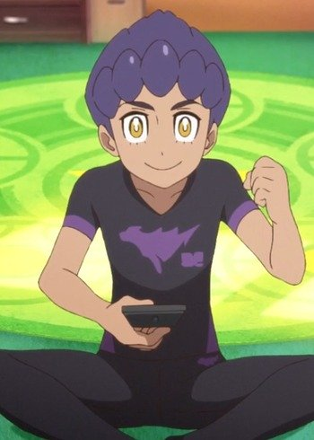
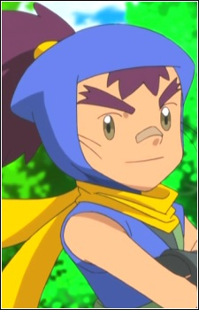

|  |
Hop |
|
Hop is a young Pokemon trainer. He is the brother is the champion and wants to be the champion of Galar. Hop constantly studys Leon's technique and figure out to become stronger. |
 |
Nozomi Yumehara |
- Yes! Pretty Cure 5
- Yes! Pretty Cure 5 Movie: Great Miraculous Adventure of the Mirror Country!
- Yes! Pretty Cure 5 GoGo!
- Yes! Pretty Cure 5 GoGo!: Happy Birthday in the Sweet Kingdom
- Pretty Cure All Stars GoGo Dream Live!
- Pretty Cure All Stars Movie DX: Minna Tomodachi Kiseki no Zenin Daishuugou
- Pretty Cure All Stars Movie DX2: Kibou no Hikari Rainbow Jewel o Mamore
- Pretty Cure All Stars Movie DX3: Reach the Future! The Rainbow Flower that Connects the World
- Pretty Cure All Stars New Stage: Future Friends
- Pretty Cure All Stars New Stage 2: Friends of the Heart
- Pretty Cure All Stars New Stage 3: Friends Forever
- Pretty Cure All Stars Movie: Spring Carnival
- Pretty Cure All Stars the Movie: Everyone Sing! Miraculous Magic
|
Nozomi Yumehara is a second year student at L'Ecole des Cinq Lumieres Institute. She does not know what she wants to do with her life. She is the leader of Pretty Cure 5!. Her alter ego is Cure Dream. |
|  |
Sanpei |
|
Sanpei is a ninja from Ninja Village. He uses different technique to help his pokemon or other pokemon. He has two older brother that live in Ninja Village. He focus on being a ninja with his Greninja. |
 |
Selim Bradley |
- Fullmetal Alchemist: Brotherhood
- Fullmetal Alchemist: Brotherhood - 4-Koma Theater
|
Selim Bradley is the son of Fuhrer King Bradley. He loves his father and asks him to tell stories of his work. He is a big fan of Edward Elric. |
| |
Thomas |
- Pokemon Diamond and Pearl
|
Thomas is a young boy who attended Johanna's Pokemon Coordinator Class to learn how to a Pokemon Coordinator. He has a secret love for Piplup and shows by teases Piplup. His criticism is helpful and harsh sometimes. |


.jpg)